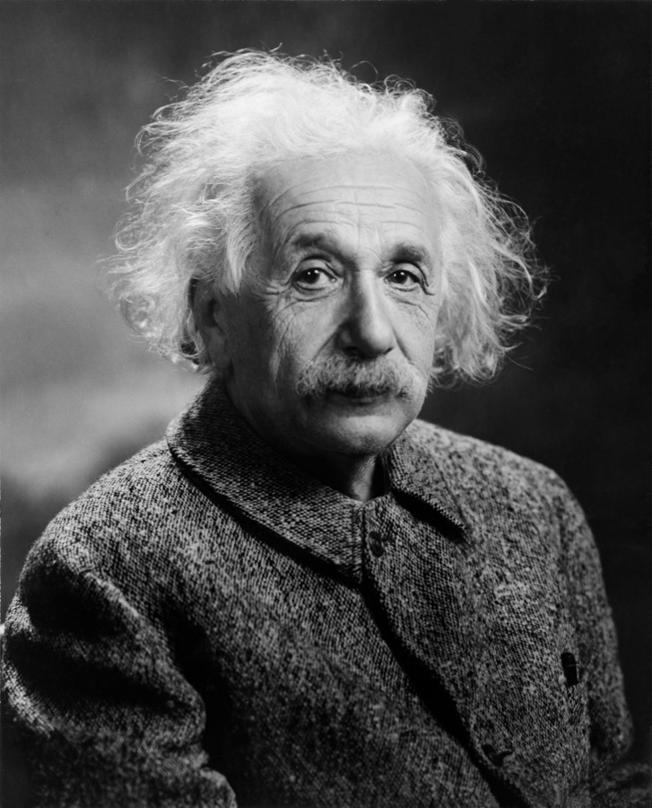
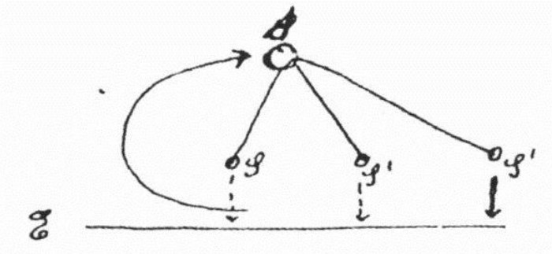
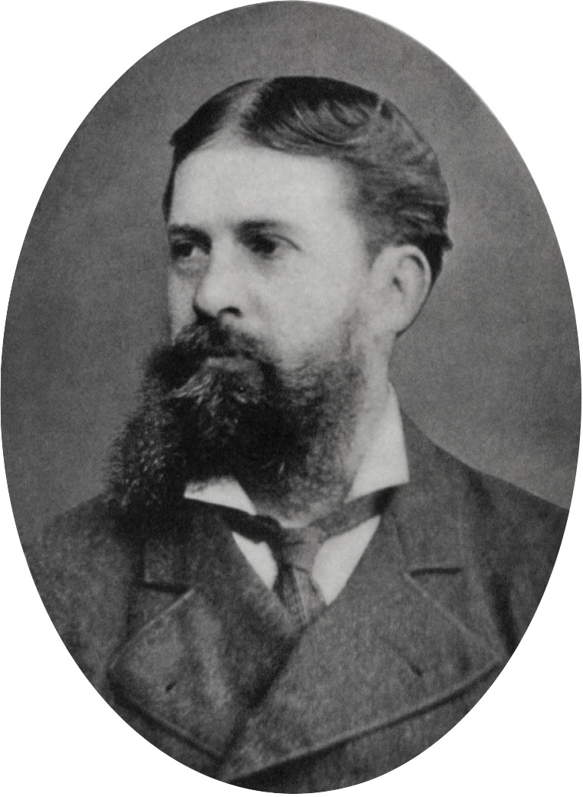

Executive Summary
Scientific discovery is not a straight line running from observation to theory. In a 1952 letter to his friend Maurice Solovine, Einstein sketched the process by hand. It is a cycle: you begin with sensory experience, take an intuitive leap that no logic can bridge to arrive at axioms, deduce propositions from those axioms, and then check them back against experience. A position paper titled “LLMs can’t jump,” written by Tom Zahavy of Google DeepMind’s discovery team, argues that today’s language models are excellent at the pattern-finding and the deduction on either side of that cycle, but that the leap in the middle is the one thing they cannot, in principle, perform. This piece follows what that leap is and why it has become a live question again.
The middle step already has a name, coined by the philosopher Charles Sanders Peirce more than a century ago: abduction. It is the move that turns an observation into a genuinely new explanatory principle. The paper’s central counterexample is general relativity. Einstein did not compress existing data more efficiently; with almost no data to work from, he invented the unprecedented concept of spacetime curvature itself. And a benchmark now draws the same boundary. On tasks where the goal is handed over and the system merely has to search and prove, AI climbs steeply — but on ARC-AGI-3, where the system must first figure out what problem it is even solving, frontier models solve less than 1% of puzzles that humans solve almost completely.
So today’s AI is less an autonomous discoverer than an extraordinarily powerful assistant. It can out-reason humans from a given set of assumptions, but it cannot invent those assumptions. To teach the leap, the paper argues, we need embodied, multimodal world models that experience the world beyond text — which points to the bottleneck of discovery being not model size but data that captures the world. One caveat up front: this is neither DeepMind’s official position nor a death sentence declaring that “LLMs will never discover.” Zahavy himself has publicly corrected both readings.
< 1%
Frontier AI on ARC-AGI-3
Tasks where you must set your own goal. Humans solve nearly 100%
91.6%
Symbolic-regression equation recovery
But this is re-finding known formulas, not inventing new axioms
~18×
Generate-vs-understand time gap
Tao’s proof: 80 minutes to produce, 24 hours to verify
$3.06B
2036 world-model market
Growing 33.5% a year — industry’s bet on the paper’s remedy
The Real Shape of Science, Drawn by Einstein
We are taught that science works like this: you observe the world, gather data, find the rule, and the rule becomes a theory. A ladder running straight from observation up to theory. Einstein thought that picture was wrong. In 1952 he sketched, by hand, what he took to be the real shape of science in a letter to Maurice Solovine, his longtime friend and philosophical sparring partner. It was not a ladder but a cycle, and the cycle had one gap that no logic could close.

The diagram has three levels. At the bottom sits the layer of sensory experience (E, Erlebnisse), the world we actually live through and measure. At the top sit the axioms (A, Axiome), the founding assumptions that hold a theory up. From the axioms you deduce various propositions (S) and then test those propositions back against experience below. The trouble is the first arrow, the one climbing from experience up to the axioms. Einstein labeled it “J” and insisted it was an intuitive leap (a leap, ein Sprung), that between experience and axioms “there is no logical path.” No matter how much observation you pile up, an axiom does not fall out of it on its own. Someone has to jump.

A reconstruction of the diagram from Einstein’s 1952 letter to Solovine. The dashed left arrow (J) is the leap for which “there is no logical path.”
Why this drawing matters again today is simple. Zahavy’s paper lays Einstein’s three arrows over today’s language models. A model is good at organizing experience by finding statistical regularities across vast text (E). Given axioms, it is increasingly good at deducing and proving propositions from them (A and S). But precisely the left arrow — the leap from experience up to axioms (J) — is blank. That is why the paper is titled “LLMs can’t jump.”
The important thing is that this diagnosis is not the claim that “the models just aren’t good enough yet.” When Einstein said J has no logical path, he meant the leap is a different kind of reasoning that does not reduce to an extension of observation or a better summary of it. If it is a different kind, it needs a name of its own. That is the subject of the next section.
The Missing Middle Step: What Abduction Is
The name is abduction. The American philosopher Charles Sanders Peirce set it out around 1900: it is the move of reasoning backward from an observed result to a guess at its cause. Peirce split human reasoning into three kinds, and once you have the distinction among them, the question “why can an LLM do deduction but not discovery?” comes into focus.

Deduction runs down from a rule to a conclusion: “All men are mortal; Socrates is a man; therefore Socrates is mortal.” Induction runs up from instances to a rule: “Every swan I’ve seen has been white; therefore swans are white.” Abduction runs in yet another direction. Confronted with a surprising fact, it says “if such-and-such a hypothesis were true, that fact would follow as a matter of course” — it invents a new hypothesis that could serve as an explanation. Of the three forms, Peirce held that only abduction introduces a new idea into the world. The other two merely organize or extend what we already have.
| Form of reasoning | Direction | What it does | LLM |
|---|---|---|---|
| Deduction | rule → conclusion | draws a necessary conclusion from given assumptions | Strong |
| Induction | instances → rule | summarizes observations into a general pattern | Strong |
| Abduction | result → new hypothesis | invents a principle that did not exist to explain the observation | Blank |
Deduction and induction overlap precisely with what today’s language models do well. Summarizing patterns from a mass of text is induction; taking assumptions and proving a theorem is deduction. What discovery needs is the third row — abduction. And the claim that this cell is empty is not mere speculation; recent work supports it from the side. According to an analysis by a Duke University team in PNAS Nexus (2026), the originality scores of individual responses were comparable to humans, yet the collective diversity across what many models produced was significantly narrower than that of humans. Scattering a wide field of candidate hypotheses is a precondition for abduction, and it is exactly that breadth that turns out to be statistically compressed.
The benchmark that shows this boundary most vividly is ARC-AGI-3. Most tests hand you the problem to solve. ARC-AGI-3 does not. Without telling you the rules or the goal, it makes you first work out what you are even supposed to do. That is as close as a benchmark gets to demanding abduction. The results look like this.
ARC-AGI-3 solve rate: humans vs. frontier AI
Every time scaling saturates one kind of abstraction, a new axis opens and the gap reappears. The paper’s claim — that this is not a shortfall in performance but a demand for a different kind of reasoning — becomes a number you can see right here.
General Relativity Was Not Compression
There is an idea that has been cited for decades whenever people talk about machine creativity: Jürgen Schmidhuber’s view that “creativity is compression.” A good theory, on this account, is one that captures the world’s regularities more compactly, and a new discovery is the act of finding a representation that compresses the data more efficiently. The reason this view is so attractive is that it turns straight into a machine-learning objective: train a model to compress data well, and surely creativity will follow sooner or later.
Zahavy’s paper takes general relativity and rebuts that equation head-on. When Einstein arrived at the equivalence principle and spacetime curvature, the data pressing on him was almost nonexistent — a few small anomalies such as the tiny shift in Mercury’s perihelion, and little else. He did not compress those meager observations more efficiently; he erected an entirely new conceptual frame in which gravity simply is the bending of spacetime. In a place where there was too little data to compress, the concept came first, and only later did it predict phenomena that would be observed — the bending of light, gravitational waves. Compression did not give birth to the discovery; the leap redefined what there was to compress.
So what about the dazzling cases where “AI rediscovered a law of physics”? The flagship is symbolic regression: feed in data, and the method automatically finds an equation that explains it. The AI Feynman line of work recovered equations from physics textbooks 91.6% of the time with no noise, and still 79.4% of the time with 10% noise added. On the numbers alone it sounds like discovery. But recent work adds a caveat. The recovered equations are, without exception, already famous formulas, so there is a strong chance the model was retracing forms it had already met during pretraining.
A success rate in the 90s is evidence that compression and induction work well. It is rediscovery: recovering an equation that already exists out of the data. General relativity, by contrast, was invention: erecting a concept that did not exist. Both may look like “finding a law of physics,” but one is finding a book in a library and the other is writing the book that was never there. The boundary the paper aims at lies exactly between these two.
One DeepMind, Two Stories
Just three weeks ago, we covered the opposite story from the same company on this blog. DeepMind’s AI Co-Scientist was the optimistic picture of AI forming its own hypotheses, critiquing one another, and designing experiments. And now a researcher at the same DeepMind says “LLMs can’t make the leap that produces a hypothesis in the first place.” It looks like a contradiction, but the two stories are in a healthy tension inside one company. That optimism and skepticism coexist is itself evidence that the question is still open.
| AI Co-Scientist (optimism) | LLMs can’t jump (skepticism) | |
|---|---|---|
| Core claim | AI automatically generates and tests new hypotheses | The leap that births a hypothesis (abduction) is missing in principle |
| Step it sees well | large-scale candidate generation and ranking | grants deduction/verification (A); denies invention (J) |
| The human’s role | curator who picks the promising hypotheses | inventor who sets the right problem and concept to begin with |
The key to dissolving the tension is to reclassify the “AI discovered it” achievements by the paper’s yardstick. A good example is DeepMind’s AlphaEvolve. The system cut the number of multiplications needed to multiply two 4×4 complex matrices to 48, breaking a record that had stood since Strassen in 1969 — the first improvement in 56 years. But through the paper’s lens this is search, not a leap. The goal, “do the same computation with fewer multiplications,” was fixed in advance by humans, and the AI combed an enormous search space to find a better solution. It found a good answer; it did not pose a new question worth asking.
The mathematician Terence Tao adds a practical warning. He reported that a proof of an Erdős problem, which a student produced in 80 minutes with the help of a chatbot, took him 24 hours to understand and verify himself. Generation has become explosively fast, but judging whether it is correct — and choosing which problems are worth solving at all — remains the human’s job and a far slower bottleneck. Demis Hassabis’s “Einstein Test” points at the same spot: acing an exam with existing knowledge and rebuilding the framework of that knowledge are different abilities.
One thing has to be stated plainly. “LLMs can’t jump” is not DeepMind’s official position. Its author, Tom Zahavy, has publicly clarified that this is a personal position paper that does not speak for the company, and that it is not the claim that “LLMs are a dead end.” It is a diagnosis that something is missing from the current architecture, not a declaration that closes off the future. The moment you translate the title’s strong tone into “DeepMind sentenced LLMs to death,” the careful distinction the paper is actually making disappears.
How You Would Teach the Leap: An Embodied World Model
If the diagnosis is right, the next question is natural: how do you teach the leap? The paper’s answer is not to make the model bigger. A model raised on nothing but text has only read the world in words; it has never lived it. The signals that feed abduction — interventions and counterfactuals, physical cause and effect, the “if I touch this, how does that change” — are poorly captured in internet text. So the direction the paper proposes is an embodied, multimodal world model: one that experiences the world directly through simulation, sensing, and intervention, and draws from that experience the raw material for new principles.
This is not a distant abstraction but an industry shift already underway. The world-model simulator market is projected to grow from about $170 million in 2026 to $3.05 billion by 2036, a compound annual growth rate of 33.5%. Capital is moving even faster. In the first half of 2026 alone, more than $3 billion in venture funding flowed into related startups. Fei-Fei Li’s World Labs raised $1 billion at a $5.4 billion valuation, and AMI Labs, founded by Yann LeCun, launched with a seed round of over $1 billion. In other words, some of the most prominent researchers in AI are betting heavily on a model of the world beyond text.
Here the argument takes one more step. The bottleneck for world models is, in the end, data. The question becomes how to capture lived experience of the world as data, and how to guarantee that the data is physically consistent and carries causal structure. Trace the inability to leap back to its root and you arrive at “the nature of the training data.” Mass text for statistical compression grows deduction but does not hold the material that gives rise to new concepts. The kind of training data fixes the model’s internal representations, and those representations fix the kinds of reasoning that are possible. The conclusion follows: the next gate for discovery is not the number of parameters but the quality of data that captures the world.
Why This Matters to Pebblous
What draws our attention to this paper is the direction its conclusion heads. The sentence “to make discoveries, you need data that has lived the world” overlaps exactly with the problem we have long been working on. The overlap shows up in four places.
Data decides the kind of reasoning
The crux is that the inability to leap can be reduced to the nature of the data. Text meant for statistical compression grows deduction, but it does not hold the abductive signals — counterfactuals, interventions, physical cause and effect. What you learned from draws the boundary of what you can reason. Diagnosing what data makes possible and what it forecloses connects directly to the concern behind DataClinic. As an aside, how fragile data integrity is in this field shows up in the benchmarks themselves: in the course of revising the theorem-proving dataset MiniF2F, a substantial share of the formal statements were found not to match their source text.
An embodied world model is a Physical AI problem
The “model that lives the world” the paper names as its remedy maps directly onto Pebblous’s Physical AI work list: simulation-based data, physical grounding, synthetic data. The conclusion that a system must experience the world rather than merely read it points to building data that captures the world as the next bottleneck. The multi-billion-dollar industry bet on this space is an external signal that the bottleneck is real.
A working coordinate for handling the ‘AI scientist’
Research and strategy teams that over-trust AI as an autonomous discoverer need a boundary line. A language model can outdo people at reasoning and verifying from assumptions, but it cannot invent the assumptions themselves. If so, the right division of labor for now is for humans to set the hypotheses and problems while AI takes on large-scale deduction and verification. Tao’s testimony adds one more layer: because the bottleneck is shifting from generation to understanding and verification, the human capacity to digest and check what AI pours out becomes a new scarce resource.
Where the top external research is pointing
A DeepMind researcher, and the bets of LeCun and Fei-Fei Li, all point one way: the next stage of discovery is not a larger language model but data that has lived the world. This piece follows that conclusion only as far as it goes, and no further. If world data is the bottleneck, the question of how to build and verify that data is what waits for us in the next chapter.
References
Papers & Academic
- 1.Zahavy, T. (2026). LLMs can’t jump (Position paper). PhilSci-Archive #28024. philsci-archive.pitt.edu/28024
- 2.Novikov, A. et al. / Google DeepMind (2025). AlphaEvolve: A coding agent for scientific and algorithmic discovery. arXiv:2506.13131. arxiv.org/abs/2506.13131
- 3.Udrescu, S.-M. & Tegmark, M. (2020). AI Feynman: a physics-inspired method for symbolic regression. Science Advances 6(16). science.org
- 4.Chollet, F. et al. (2026). ARC-AGI-2: A New Challenge for Frontier AI Reasoning Systems. arXiv:2505.11831. ARC-AGI-3 preview: arcprize.org/arc-agi/3
- 5.Wenger, E. & Kenett, Y. N. (2026). Large language models are homogeneously creative. PNAS Nexus. academic.oup.com
Industry & Press
- 6.McKendrick, J. (Aug 5, 2026). AI Is Smart, But Not Yet Capable Of Original Thought. Forbes. forbes.com
- 7.Tao, T. (2026). “Mathematics in the Age of AI” — remarks on the proof surplus (Erdős problem, 80 minutes vs. 24 hours).
- 8.Hassabis, D. (Feb 2026). “Einstein Test” remarks, India AI Impact Summit, New Delhi.
- 9.Fact.MR (2026). World Model Simulators Market. factmr.com
Theoretical Background
- 10.Peirce, C. S. — definition of abduction. Collected Papers 5.171 and elsewhere.
- 11.The E–J–A diagram from the Einstein–Solovine correspondence (1952), transmitted via the standard secondary sources of Schilpp / Holton. Schmidhuber’s “creativity as compression” theory is the target of the rebuttal in the text.
The account of the primary paper draws on a mirror of the author’s homepage cross-checked against secondary sources; direct citations are marked at the level of “the paper argues.” Details of the Einstein diagram and of Peirce’s abduction follow standard scholarly secondary sources.